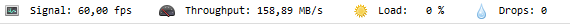

Recording¶
Starting and stopping recording¶
Recording can be started manually by using the record button  in the capture controls, or automatically by configuring an audio trigger.
in the capture controls, or automatically by configuring an audio trigger.
To configure the audio trigger, see Options > Preferences > Capture > Automation.
Replaying the captured video¶
The videos recorded during the session are added to the list of recently captured files.
A recording can be played back by double clicking the thumbnail of the recently captured file or by right clicking and choosing .
New recordings can also be played back automatically by using a replay folder observer on the target folder of the capture screen.
Output options¶
The path to save the recording and the file name of the output video are based on the options under .
The duration of the recording is either set manually when using the stop recording button, or automatically when using the Stop recording by duration option in .
Recordings can be compressed or uncompressed based on the option set in .
Recordings can ignore or take into account the live delay based on the recording mode set in .
For high speed cameras the framerate set in the metadata of the output video can be customized by configuring a replacement framerate in .
Performances¶
When the recording process is not fast enough to sustain the camera framerate, images are skipped (dropped) and not added to the output video. This can corrupt time measurements made on the output video, as this assumes stable frame rate.
In order to make the most out of the camera without any frame drops, it is important to identify the bottlenecks and configure the camera and MotionON according to your requirements and the trade offs you are interested in.
Use the infobar to get feedback about performances.
See also: Capture screen user interface.
Recording mode¶
The recording mode Retroactive should not yield any frame drops but the duration of the output videos is limited by the amount of memory allocated for the delay buffer. Furthermore, this mode renders the camera unavailable for a small duration after the recording, while MotionON performs the actual export.
The other two modes record on-the-fly and can record for arbitrary long periods (based on storage space) and without post-recording pause. However they require more configuration if the camera does not already produce compressed images.
Compression¶
For cameras that do not produce an already compressed stream, MotionON may compresses the images on the fly on the CPU. This process is usually slow compared to the frame rate that the camera can sustain.
You can disable compression on recordings under .
When compression is disabled, the amount of data to store on file is between 5 to 10 times larger. In this configuration, the speed of the storage medium might become the new bottleneck. Solid state drives (SSD) are very much recommended instead of hard drives (HDD). NVMe SSD offer even better performances. Ultimately it is also possible to configure a RAM Drive to further increase the storage speed.
Automation scenario¶
It is possible to setup MotionON to record and replay videos multiple times in a row without manual interaction.
To do this set the recordings to start from the audio trigger and stop from the recording duration preset. Add a replay folder observer monitoring the capture folder, this will automatically open and play the last recorded video.